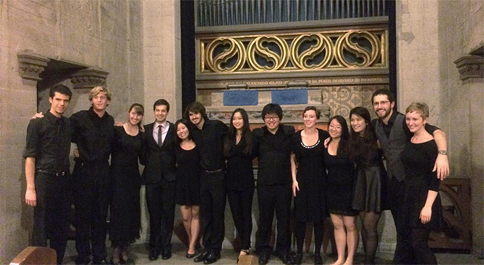

|  |
Perfect Fifth is a small a cappella choir in UC Choral Ensembles. We specialize in choral music of the Renaissance and early Baroque, both sacred and secular, as well as contemporary art music.
Perfect Fifth ("P5" for short) performs throughout the bay area. Since the group's formation in 2001, we have sung for engagements including the Pier 39 Tree lighting, Yo Yo Ma's Silk Road Project, and Mark Morris' Hard Nut. The 2001-2002 season culminated with a seventeen-day tour of China with the UC Alumni Chorus. In May 2004, we went on yet another tour with Alumni Chorus, this time to Finland, Latvia, Russia, and Estonia. At the end of our 2007-2008 season, P5 was chosen to participate with Cal Performances and the UC Berkeley Department of Music, under the direction of UC Berkeley musicologist and professor Davitt Moroney, in presenting the American premiere of Alessandro Striggio's Missa sopra Ecco sì beato giorno in 40 and 60 parts, the largest known contrapuntal choral work in Western music. P5 again colloborated with Professor Moroney in the Spring of 2009, this time with the UC Berkeley Baroque Ensemble on Henry Purcell's Rejoice in the Lord Alway. In the Fall of 2008 & 2010, Perfect Fifth was selected to perform as a part of Voices of Light, an oratorio written by Richard Einhorn to accompany Carl Dreyer's silent film, The Passion of Joan of Arc, where the women of P5 were to portray the voice of Joan.
P5 consists of 8 to 14 experienced singers, both undergraduate and graduate students, whose voices range from soprano to bass. We are directed by Mark Sumner and managed by Jacob Liming, business, and Steven Lauterwasser, music.